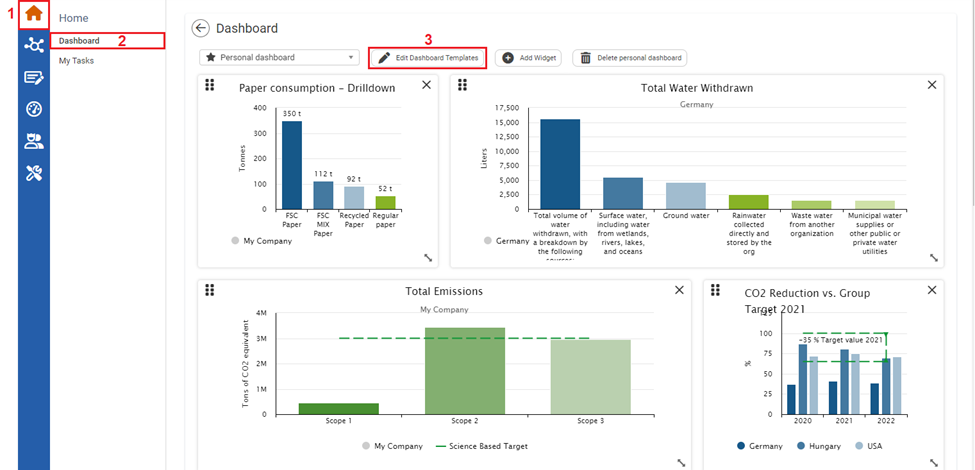
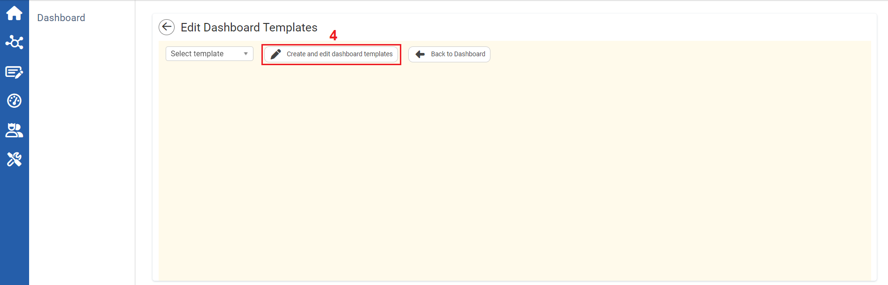
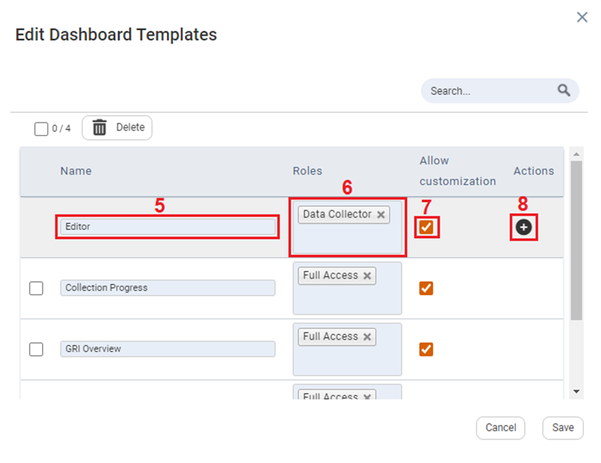
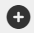
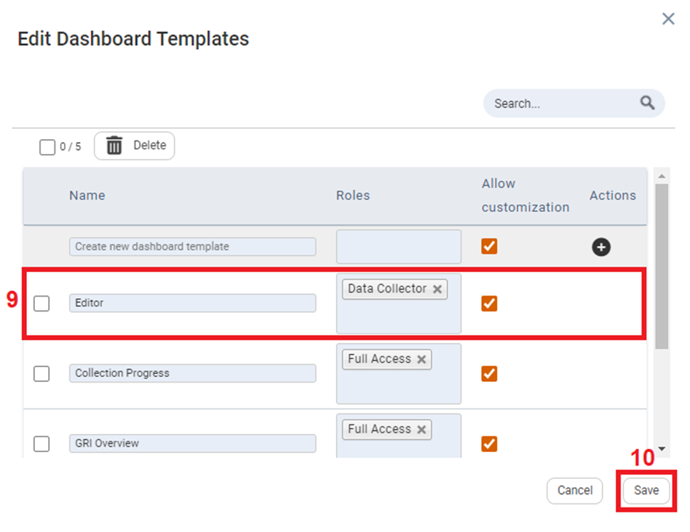
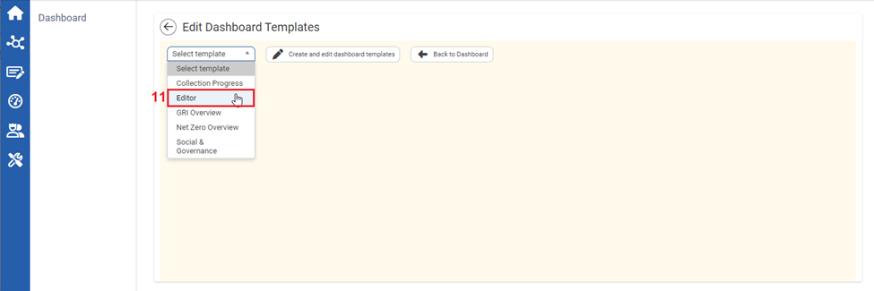
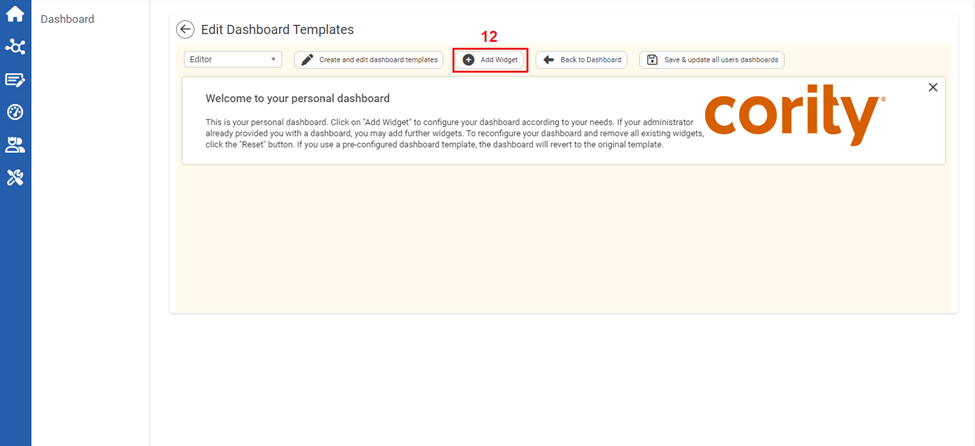
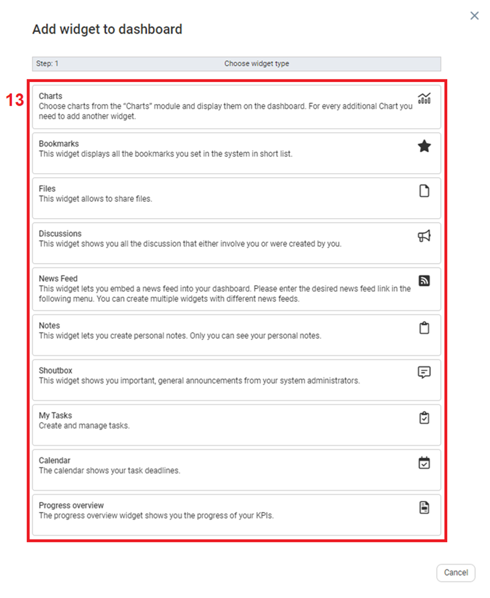
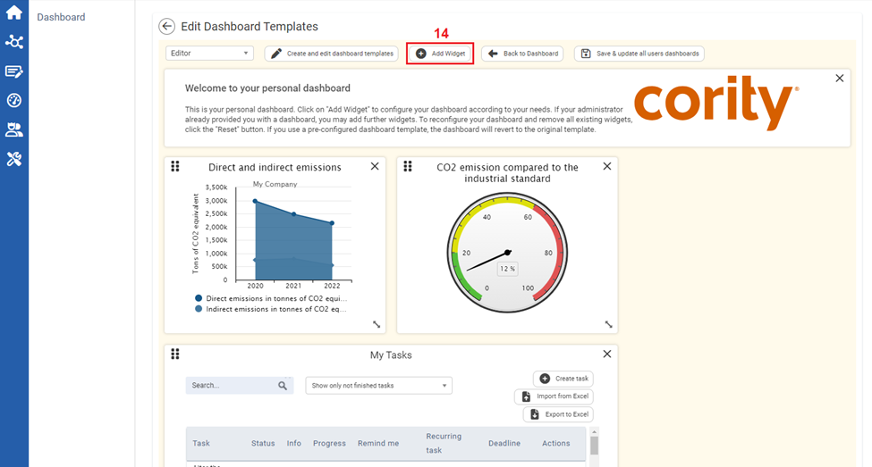

Only Admin users can edit dashboard templates for user groups.
To Create User Group Defined Dashboard:

| 1 | On the left navigational panel, click the Home icon. The Home menu appears. |
| 2 | Click Dashboard. The Dashboard window appears. |
| 3 | Click Edit Dashboard Templates. The Edit Dashboard Templates window appears. |

| 4 | Click Create and edit dashboard templates. The Edit Dashboard Templates window opens. |

| 5 | On the Edit Dashboard Templates window, click the Name textbox, and input a name for the user group defined dashboard. |
| 6 | Click the Roles textbox and select a role which is the user group that will have access to this Dashboard. |
| 7 | Allow Customization checkbox is by default checked. Note: When the checkbox is activated users of the user group have the option to customize the dashboard. In case the dashboard is customized by a user, it is saved as a personal dashboard. This means that personal changes of a public dashboard cannot be seen by all users. |
| 8 | Click the  icon under the Actions column. The Dashboard Template is added as an option on the Edit Dashboard Templates. |

| 9 | The Dashboard Template is added as an option on the Edit Dashboard Templates window. |
| 10 | Click Save. The option is added to the Dashboard. |

| 11 | On the Edit Dashboard Templates window, click the Select Template dropdown textbox, and select the Dashboard template you created. In this case Editor. |

| 12 | Click Add Widget. Add Widget to dashboard window opens. |

| 13 | Click a widget you want to add to your dashboard. The widget is added to the dashboard. Depending on the widget selected there may be additional steps in adding the widget such as chart and News Feed. The remaining widgets can be added by clicking the widget type. |

| 14 | You can continue to add widgets by clicking Add Widget, and selecting widgets you want to add. |
Once widgets are added to your dashboard, you can resize, reorder, and delete widgets on your dashboard.